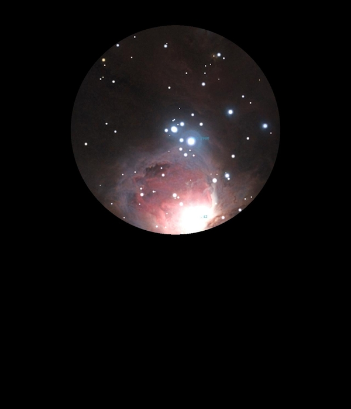

HIP 26199 & HIP 26197

Wide Double Stars in Orion
HIP 26199 & HIP 26197
Mags 4.69 and 5.56
06/03/24
A
lovely wide double, are the two different colours when viewed in
20x80 binoculars, with HIP 26199 redder? HIP 26197 is described
in Stellarium as a 'Young Stellar Object' is it much more blue
than it's companion?